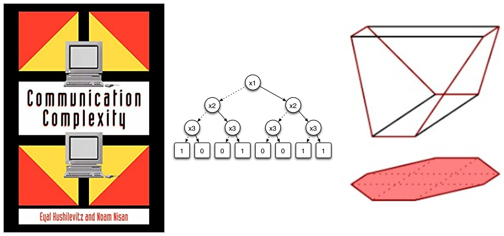

Extension complexity and lifting theorems
FSTTCS2019 Workshop. December 14, 2019.
Organizers: Ankit Garg, Raghu Meka, Toniann Pitassi, Makrand Sinha
Invited Speakers: Arkadev Chattopadhyay, Pritish Kamath, Pravesh Kothari, Suhail Sherif, Marc Vinyals
Questions? Send an email to Ankit, Raghu, Toni or Makrand.
Overview

The workshop will focus on two exciting subareas of communication complexity where a lot of progress has been made in the past few years: extension complexity and lifting theorems. Extension complexity is an exciting area at the intersection of combinatorial optimization and communication complexity. The area studies the sizes of the smallest (LP or SDP or more generally convex) extensions of polytopes and the techniques used share a lot in common with communication complexity. Another hot topic in communication complexity nowadays is the study of lifting theorems: lifting hardness from simpler models (usually in query complexity) to more complex models (usually in communication complexity). Such lifting theorems are now known for various models including the ones arising in extension complexity. The workshop will focus on classical results as well as recent progress.
Schedule
Morning Tutorials
| Time | Speaker | Title | |
|---|---|---|---|
| 8:40–8:45 | Welcome & overview | ||
| 8:45–9:50 | Ankit Garg | A panorama of scaling and its applications | [pdf] |
| 10:00–10:30 | Rafael Oliveira | How to analyse a scaling algorithm? | [pdf] |
| 10:30–11:00 | break | ||
| 11:00–12:00 | Michael Walter | Non-commutative optimization and scaling | [pdf] |
Afternoon Workshop
| Time | Speaker | Title | |
|---|---|---|---|
| 14:00–14:45 | Rafael Oliveira | Geodesically Convex Optimization and Applications to Operator Scaling and Invariant Theory | [pdf] |
| 14:45–15:20 | break | ||
| 15:20–16:05 | Matthias Christandl | Tensors: From Entanglement to Computational Complexity | [pdf] |
| 16:15–17:00 | Nisheeth Vishnoi | On the Computability of Maximum Entropy Distributions | [pdf] |
| 17:10–17:55 | Akshay Ramachandran | The Paulsen Problem, Continuous Operator Scaling, and Smoothed Analysis | [pdf] |
Abstracts
Tutorials (Ankit Garg, Rafael Oliveira, Michael Walter)
The story starts with Sinkhorn in 1964 who studied the problem of matrix scaling, where the goal is to scale, i.e. multiply rows and columns by scalars, a non-negative matrix to a doubly stochastic one. Since Sinkhorn’s work, matrix scaling has been extensively studied and has found applications in numerous areas such as statistics, numerical linear algebra as well as theoretical computer science. Next Gurvits, in early 2000’s, generalized these ideas in several directions. One generalization was operator scaling which recently resulted in a deterministic polynomial time algorithm for the non-commutative rational identity testing problem (one other generalization was in the direction of real stable polynomials which resulted in a “proof from the book” of the Van der Waerden conjecture). It turns out these scaling problems arise naturally in the context of group actions and invariant theory which provide a further plethora of scaling problems. Some additional problems that fall under this umbrella are the so called non-uniform scaling problems which include Brascamp-Lieb inequalities, Horn’s problem, quantum marginal problem etc. Algorithms have been recently designed for many of these scaling problems as well. We will catch a glimpse of this exciting story.
Geodesically Convex Optimization and Applications to Operator Scaling and Invariant Theory (Rafael Oliveira)
In this talk, we discuss a new second-order method for geodesically convex optimization problems, on the natural hyperbolic metric over positive definite matrices. This method is a geodesic generalization of the boxed-constrained Newton method used by [ALOW’17, CMTV’17] which provided faster algorithms for the matrix scaling problem. With this new technique, we obtain algorithms for the Operator Scaling problem which is polynomial in the input size and logarithmic on the error.
As an application, we use this new algorithm as a subroutine to solve the orbit closure intersection problem for the left-right action.
Joint work with Zeyuan Allen-Zhu, Ankit Garg, Yuanzhi Li and Avi Wigderson.
Tensors: From Entanglement to Computational Complexity (Matthias Christandl)
We wish to understand when a tensor s can be transformed into a tensor t by application of linear maps to its tensor legs (we then say s restricts to t). In the language of restrictions, the rank of a tensor t is given by the minimal size of a diagonal tensor restricting to t. The study of rank and restrictions are motivated by algebraic complexity theory, where the rank corresponds to the computational complexity of a bilinear map (e.g. matrix multiplication) which then is viewed as a tensor with three legs.
Interestingly, some important open problems can be formulated in terms of asymptotic properties of restriction, among them the exponent of matrix multiplication. Following the seminal work of Volker Strassen, we will therefore study whether for large n the (n+o(n))’th tensor power of s can be restricted to the n’th tensor power of t. The information-theoretic flavor of the problem is apparent and was heavily used by Strassen in conjunction with the discovery of algebraic structures (his spectral theorem).
Identifying k-leg-tensors with states of quantum systems of k particles allows us to bring tools and ideas from quantum information theory to the table, among them entanglement polytopes and quantum entropy. I will use these to construct a family of functionals - the quantum functionals - that can serve as obstructions to asymptotic restrictions. The functionals are the first of their kind applicable to all tensors, thereby solving a problem by Strassen from 1986.
The talk is based on joint work with Peter Vrana and Jeroen Zuiddam.
On the Computability of Maximum Entropy Distributions (Nisheeth Vishnoi)
This talk is about the problem of computing the maximum entropy distribution with a specified expectation vector over a discrete domain. This problem arises and has found numerous applications in economics, machine learning and various sub-disciplines of mathematics and computer science. A key question related to the computability of maximum entropy distributions, when the domain is large or implicitly specified, is whether they have succinct descriptions (polynomial-size in the input description).
I will present a resolution of this question: a polynomial bound on the bit complexity of near-optimal dual solutions to the maximum entropy convex program – with no restriction on the expectation vector or on the cardinality of the domain. An application of this result – a polynomial time algorithm to compute the Brascamp-Lieb constant in the rank one case – will also be presented.
Based on a joint work with Damian Straszak (arXiv:1711.02036).
The Paulsen Problem, Continuous Operator Scaling, and Smoothed Analysis (Akshay Ramachandran)
The Paulsen problem is a basic open problem in operator theory: Given vectors u_1,…,u_n ∈ ℝ^d that are ϵ-nearly satisfying the Parseval’s condition and the equal norm condition, is it close to a set of vectors v_1,…,v_n ∈ ℝ^d that exactly satisfy the Parseval’s condition and the equal norm condition? Given u_1,…,u_n, the squared distance (to the set of exact solutions) is defined as inf ∑‖u_i−v_i‖^2_2 where the infimum is over the set of exact solutions. Previous results show that the squared distance of any ϵ-nearly solution is at most O(poly(d,n,ϵ)) and there are ϵ-nearly solutions with squared distance at least Ω(dϵ). The fundamental open question is whether the squared distance can be independent of the number of vectors n. We answer this question affirmatively by proving that the squared distance of any ϵ-nearly solution is O(d^13/2ϵ). Our approach is based on a continuous version of the operator scaling algorithm and consists of two parts. First, we define a dynamical system based on operator scaling and use it to prove that the squared distance of any ϵ-nearly solution is O(d^2n/ϵ). Then, we show that by randomly perturbing the input vectors, the dynamical system will converge faster and the squared distance of an ϵ-nearly solution is O(d^5/2ϵ) when n is large enough and ϵ is small enough. To analyze the convergence of the dynamical system, we develop some new techniques in lower bounding the operator capacity, a concept introduced by Gurvits to analyze the operator scaling algorithm.